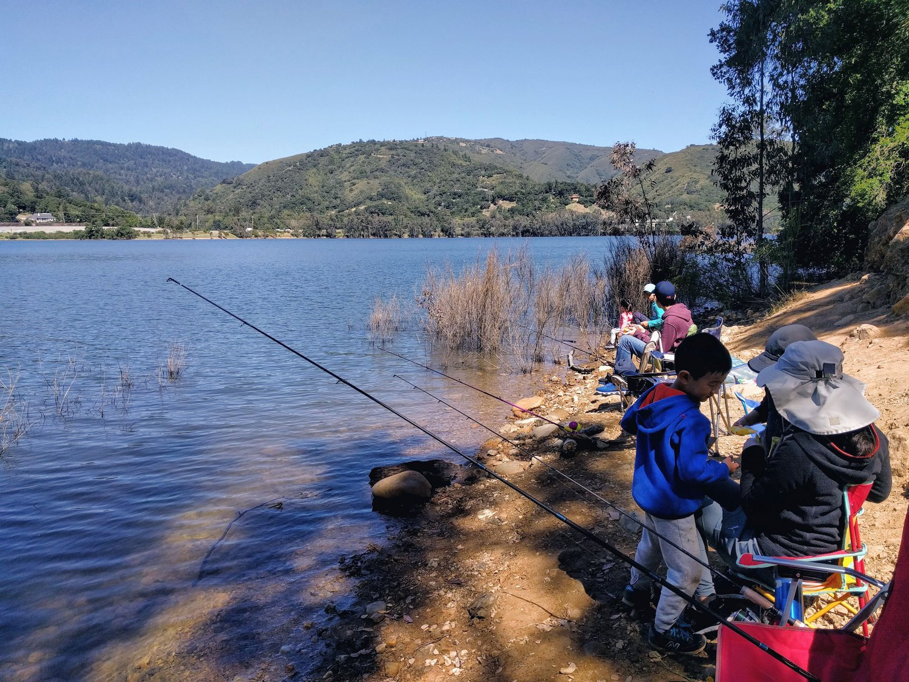
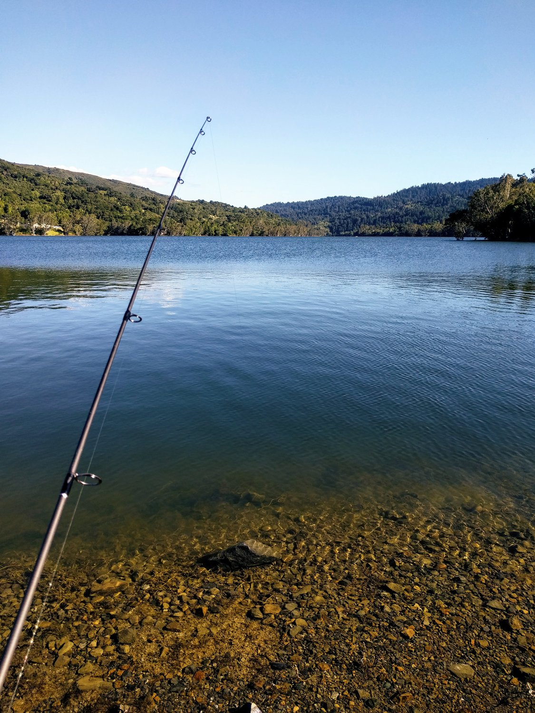

Landscaping
집을 구입할 때, 뒷마당이 정말 숲속에 있는 것 같은 느낌이었습니다. 우거진 나무에 덤불에 파릇파릇한 잔디까지, 아늑한 느낌을 주는 뒷마당이었죠.
집을 구입할 때, 뒷마당이 정말 숲속에 있는 것 같은 느낌이었습니다. 우거진 나무에 덤불에 파릇파릇한 잔디까지, 아늑한 느낌을 주는 뒷마당이었죠.
오늘 장학사(Superintendent)로부터 전체 이메일을 한통 받았네요. 그 중 눈에 띄는 내용이 있었는데,,,
Our goal as an elementary school district is to promote student learning in an environment that supports social-emotional well-being and physical health. Participation in events that are being proposed in the media, such as protests and walkouts, may increase the sense of fear and anxiety among our younger students and would create additional safety concerns in ensuring sufficient supervision.
We do however respect our students’ interests and desires to express their feelings and exercise their right to Free Speech. In response to the considerations of the age-appropriate needs of students in grades TK-8, site and district staff will not be promoting or encouraging students to participate in walkouts or protests. Our site administrators will, however, support students who share with them that they would like to have their views be heard. At the middle school levels, student leadership groups have expressed to their principals that they would like to safely and respectfully express their feelings. Our middle school principals, Randy Martino and Todd Feinberg, will be working with students on safe and appropriate ways for students to have their voices be heard.
-- Denise Clay, Superintendent
한국의 학창시절을 보낸 저에겐 충격이었네요. '겨우 십대 초반의 꼬맹이가..' 란 생각을 하기 쉬운 중학생의 의사표현을 존중하고, 귀 기울이고, 그 의견이 전달되도록 힘쓰겠다는 말이, 비록 말뿐일 순 있겠지만, 낯설게 들리면서도 감동이었네요.
한국의 학생들은 많은 시간을 의견이 묵살되는 것을 경험해 왔죠. 저 또한 그런 모습을 빈번히 보아왔구요. 그런 시간을 거치면서 저에게 자연스레 어린 아이의 의견은 무시해도 된다는 생각이 자리잡게 되었던 것 같네요. 두 아이를 돌보면서 하나의 인격체로 대하지 못했으니까요.
반성하고 고쳐나가야 할 부분입니다. 아이에게 가르칠 것은 가르쳐야 하는 게 부모의 의무이지만, 가르친다는 이유로 아이의 모든 말보다 부모의 말이 우선이 될 순 없는것인데, 그러지 못했네요.
어릴적, 아버지께서 쉬는 날이 되면 저와 형 손을 잡고 집 근처 다리가 연결된 섬으로 낚시를 종종 갔었습니다. 산길로 차를 몰고 가서 멈추고, 낚시대 가방과 아이스박스를 들고 한참을 산을 타고 바위를 넘어서 갯바위로 갔었죠. 거기서 감성돔도 낚고, 우럭도 낚고, 이것 저것 많이 낚았던 기억이 아직도 생생합니다. (제일 많은건 놀래미...)
커가면서 점점 낚시도 뜸해졌고, 갯바위에서는 잔챙이 복어 말고는 더이상 물고기가 잘 안잡히게 되더군요. 아무래도 고향이 점점 발전된 도시가 되면서 도시 근처에선 물고기가 살기 힘든 환경이 되어버린 탓이겠죠. (요즘엔 다시 수질 관리를 해서, 좀 낚인다는 소문이 들립니다)
미국에 와서 오랫동안 손 놓고 있던 낚시를 다시 해보려고 이리저리 저렴하게 장비를 구입중입니다. 9피트짜리 단돈 40불 안되는 루어낚시대, 3000대 스피링 릴, 20파운드 줄과 루어를 사서 출격 준비중입니다.
호수 낚시는 어렵기도 해서 낚시대는 모셔만 두고 있는데, 해변 낚시는 아이들이 해변에서 모래놀이 하는 동안 낚시 할 수 있을 것 같아 시도해 보려고 합니다. 이번 주말에 낚시 조황이 좋을 것 같다는 예보에 한번 나가보려 하는데, 잘 잡히려나 모르겠네요. 루어 낚시는 한번도 해본 적이 없으니 99% 허탕을 치겠지만, 그래도 낚시대 드리우는 것만으로 기분이 좋을 듯 합니다.
이런 저런 취미를 가져보려 하는데, 아이들과 같이 시간을 쓸 수 있는 취미는 몇 없더군요. 서핑을 하기엔 아이들이 어리고, 스노우보드는 좋아하지만, 겨울에만 즐길 수 있는데다, 올해는 시에라에 역대 최저 눈이 내렸다고 하니 점점 눈 보기 힘들어질 것 같고 (리프트권도 엄청 비싸구요.. ㅜ.ㅜ) 그러네요.
낚시 다녀와서 한번 결과를 올릴게요. 물론.. 꽝이겠지만요.
매년 계속 되는 지름보고 입니다.
임의 순서로 중요한 것만 추려보았습니다.
AKG K702
년초에 영국 아마존 (영마존이라 부르죠)에서 아주 저렴한 가격에 풀려서 회사일 하면서 들어보려 구입한 헤드폰입니다. 백오더라 받는데 한달이 걸리긴 했지만, 3대 레퍼런스 헤드폰으로 불리는 녀석이라 기다릴만한 가치가 있었습니다.
다만 저에겐 좀 착용이 불편하고 귀가 아파서 얼마 듣지 못하고 지인에게 선물했네요.
Code & Quill Origin Notebook
기존 Clairefontaine Agebag Clothbound 노트북이 실제본에서 떡제본으로 바뀌면서 좍~ 펼쳐지지 않아서 물색한 노트북입니다. 일단 디자인은 정말 깔끔해서 좋아요. 백색 인조가죽같은 하드커버도 마음에 듭니다. 다만 커버가 너무 두꺼워서, 다음에는 Traveler Notebook 버전으로 구매해 볼까 합니다.
종이 재질은 클레르퐁텐 노트북에 비해 약간 아쉽습니다. 만년필이 뒤에 비치는 것은 아닌데, 좀 잘 번지네요. 그러나 그것보다 아쉬운 것은 선이 그려진 버전인데 선 간격이 너무 조밀합니다. 몰스킨같이 조밀해서 한 출 쓰고 한줄을 띄어야 하나 고민될 정도네요. 결국 다시 클레르퐁텐으로 돌아왔습니다. 고민하고 있는 것은 클레르퐁텐 Essential 을 사용하느냐 아니면 돈을 좀 더 주고 로디아 Webnote를 쓰느냐네요.
Baron Fig Confidant라는 노트북도 있긴 한데 이것도 종이 질이 클레르퐁텐에 미치지는 못하다고 합니다.
iRobot Roomba 805
이전, 삼성 로봇 청소기에 데인 터라 로봇청소기는 거들떠 보지도 않았는데, 바닥 진공청소기는 자주 돌리는 게 좋겠다 싶어서 대충이라도 이물질을 청소해 줬으면 하는 바람으로 구입한 로봇청소기 입니다. 그 사이에 많이 발전한 것 같네요. 일단 자기가 한번에 다 빨아들일 수 없다는 걸로 생각하고, 반복적으로 여러번 같은 곳을 지나갑니다. 그러다 보니 일단 어느정도는 바닥이 청소가 되는 것 같네요. 다만, 바닥에 걸리적 거릴만한 게 없어야 할 거 같네요. 비닐봉지 빨아들여서 에러를 내뱉는 경우가 많아요.
Xbox One S
도서관에서 무료로 빌릴 수 있는 DVD가 많아서, 아이들 DVD 플레이어 용도로 구입한 녀석입니다. 예상은, DVD + 게임 이었는데, 게임이 너무 비싸서 살 수가 없네요. 여전히 DVD 플레이로만 사용되고 간간히 아이들이 마인크래프트 플레이 하는 용도로 사용 중입니다. 100% 활용을 하고 있지 못해서 아쉽지만, 100% 활용하자고 게임마다 60달러를 쏟아붓기에는 Steam 이 너무 매력적이네요.
[BenQ HT-2050 Projector][benq-ht2050]
[Onkyo S7800 Sound System][onkyo-s7800]
Elitescreen 120" Motorized Projector Screen
Ikea SEKTION Kitchen Cabinets
이사온 집에 주방이 좁아서 식기 놔둘 공간도 마땅치 않았습니다. 그래서 벽을 좀 손보고 이케아에서 캐비닛을 사서 설치했네요. DIY로 했는데, 작업하면서 이케아가 정말 시스템을 잘 만들었구나.. 생각이 들었어요. suspension rail을 이용해서 벽에 거는 걸 쉽게 만든 점이나, 문 설치를 위해 미리 구멍을 뚫어놓아서 먼지 날릴 일이 없다는 점등 다양한 부분에서 쉽게 조립할 수 있게 만들어놨더군요. 덕분에, 부담스러웠던 주방 캐비닛 설치를 그래도 우여곡절끝에 잘 마칠 수 있었습니다.
Ryobi Cordless Pole Saw
뒷마당에 있는 나무의 높은 가지를 쳐내려고 구입한 장대 전기톱입니다. 보통 전기톱을 살까 하다가 너무 저에겐 과분한 것 같아서 좀 더 활용이 큰 이 장대 전기톱으로 선택했는데, 두개 다 필요한 것 같네요. 이걸로 낮은 나무 기둥을 자를려고 하면 자세가 정말 어정쩡하게 나옵니다. 그래도 두꺼운 나뭇가지를 사다리타고 올라가 톱질하고 있는 것 보다는 낫죠!
Ego Electric Lawn Mower
기존 개스 잔디깎이가 이사 후로 사망 선고가 내려지는 바람에 기화기(carburetor)를 새로 사서 바꿀까 하다 넘어간 (금액이 열배?) 무선 전기 잔디깎이 입니다. 유선은 선을 잘 짤라먹는다고 해서 무조건 무선으로 갈 생각이었고, 그 중에 DeWalt가 있었다면 샀겠지만 아니라서 그 다음으로 평이 좋은 녀석으로 구입했습니다.
정말 엔진 잔디깎이만큼 강력하고, 가솔린 냄새도 안나고 덜 시끄럽고 아주 만족하는 제품입니다. 비싸긴 한데, 참고 1년만이라도 내가 앞마당, 뒷마당 잔디 관리하면 이득! 이라는 생각으로 잘 쓰고 있습니다. 의외로 마당 관리하는게 일이 많은데 재밌습니다. :)
DeWALT 20V MAX Leaf Blower
렌트로 살았던 집에서는 가을에 떨어지는 낙엽을 일일히 빗자루로 쓸어댔습니다. 뒷마당이 정말 컸던 집이라, 한번 쓸기 시작하면 한시간은 기본이었구요. 이사 후론 절대 그렇게 뙈약볕에서 빗자루질을 하진 않겠노라 다짐하며 블로워를 구입했습니다.
대만족, 20V Max (그냥 일반적인 18V짜리에요) 임에도 바람이 강력해서 휘발유 엔진 블로워랑 별 차이도 없고 조용하네요. 배터리도 정말 오래 갑니다. 뒷마당 앞마당 다 청소해도 반은 넘게 남아있는 것 같네요 (LED 3칸중 2칸 뜹니다) 덕분에 DeWalt 에 대한 신뢰도가 급상승해서 String Trimmer, Hedge Trimmer도 구입하게 되었네요. :)
DeWalt 20V MAX String Trimmer & Hedge Trimmer
잔디의 가장자리를 깎기 위해 유용한 string trimmer와 자잘한 가지를 반듯하게 쳐낼 수 있는 hedge trimmer는 마당 꾸미기에 필수품이 아닐까 합니다. DeWalt string trimmer의 단점이라고 하면 가장자리를 편하게 자르기 위한 롤러가 장착이 안된다는 건데, 그럼에도 불구하고 cordless 치고 강력한 절삭능력을 보여줘서 마음에 듭니다.
Dyson V7 Cordless Vacuum
기존에 사용하던 다이슨 무선 청소기 (DC56)가 사망하시는 바람에 (왜 이사 후 이리 고장나는게 많은지..) 새로 구입한 무선청소기 입니다. 무선임이도 유선을 대체할만 하겠더군요. 청소도 정말 쉽고 흡입력도 유선 다이슨과 비교해도 떨어지지 않고, 벽걸이까지 같이와서 충전하기도 편하고, 만족하며 사용중입니다.
Rubbermaid 5ft x 2ft storage shed
Rachio Smart Sprinkler Controller + Wireless Rain Sensor
날씨와 레인센서를 이용해서 잔디의 물을 알아서 주는 시스템입니다. 물 리베이트가 있어서 사서 쓰게되었는데, 알아서 물양을 늘였다 줄였다 하니 좋더군요. 다만, 처음에 잔디가 좀 말라가서 보니, 세팅을 꼼꼼하게 해야 물을 적절하게 줄 것 같더라구요. 일반적인 상황에서는 문제가 안되는데, 저희 집은 잔디에 물을 rotor head로 주다보니 물 양이 rachio가 생각하는 양보다 훨씬 적게 들어가게 되서 잔디가 물이 부족해졌네요. 사서 몇달간은 잔디 상태 보아가며 적절한 세팅을 찾아야 하지만, 그게 끝나고 나면 잔디에 신경을 끌 수 있어서 좋은 것 같아요.
Samsung Smartthings + Phillips Hue + Google Home Mini + GE Z-wave Light Switch + Motion Sensor + Leak Sensor
집 장만 후 스마트폰으로 또는 음성으로 집을 제어해보고자 블랙프라이데이에 할인할 때 장만했는데, 만족중입니다. 특히 Scene이 있어서 특정 상황에서 집안 전체 또는 특정 지역의 전등을 한번에 바꿀 수 있는 것은 매우 유용하네요. 집 밖에 크리스마스 전등을 달아두었는데, 기존 타이머를 이용한 것 뿐만이 아니라, 다른 상황에서도 유용하게 쓰여서 좋습니다. 기존 등을 활용하기 위해 필립스 휴 보다는 GE Z-wave Light switch를 구입해 집안 전등 스위치를 바꿨는데, 이게 더 나은 선택같네요.
구글 홈 미니는 거의 공짜로 구매할 수 있는 딜이 떠서 샀는데, 기존에 구글홈을 방에만 두었다가 구글홈미니가 거실과 주방을 담당하게 되니 사용 폭이 훨씬 늘어났습니다. 마음 같아서는 더 구입해서 아이방에 두고 싶은데, 딜이 두개가 끝이라 아쉽네요.
Smartthings로 연동되는 기능이 워낙에 많다보니, 이것 저것 추가하는 재미가 있네요. 누수 센서도 추가하고, 모션센서, 도어 열림 센서도 추가해서 Home security까지 구축이 가능하니 꽤 유용하네요. 조만간 Arlo Pro 카메라도 장만해서 좀 더 사용처를 늘려볼 생각입니다.
Turf & Needle Pillow
Purple Platform Base
미국에 와서 지금까지 매트리스를 침대도 없이 바닥에 두고 썼는데, 이사와서 그래도 바닥에서는 좀 띄워서 써야겠기에 장만한 Platform base입니다. 광고에 삐걱대지 않는다고 광고해서 비싼 금액을 주고 샀는데, 조립하고보니 삐걱대네요. 고객센터와 이야기 한 후에 보니 설명서에 나와있는 부분 외에 추가로 나사를 조여야 하는 곳이 꽤 있어서, 그 부분을 조정하고 나니 삐걱소리가 사라졌습니다. 지진이 와서 지붕이 무너져도 버텨낼 것 같은 튼튼함에 마음이 듭니다.
렌트를 2년 연장한 게 몇달 되지 않았는데 다른 집으로 이사하게 생겼네요. 어쩌다 보니 시장이 뜨겁게 달아오른 이 때에 집을 사게 되었네요.
집을 보기 시작한 건 아마 미국을 오자마자부터 였던것 같네요. :) 주말에 놀러다니기 바쁘기도 했지만, 짬 날 때 근처에 Open House가 있으면 가서 보는 걸 많이 했어요. 그 때에는 보는 눈이 없다보니, 아무 집이나 보면 마음에 들더군요. 타운하우스도 좋고, 야드 거의 없는 싱글하우스도 좋고, 학군은 뭐 별로 상관 없어서 Santa Teresa까지도 돌아보고 그랬었죠.
그런데 싱글 하우스를 렌트한 뒤로 집을 보는 게 조금 달라졌어요. 넓은 뒷마당이 있고, 아이들이 따로 독립된 공간에서 놀 수 있는 공간 (저흰 놀이방이라고 부르지만 Den 같은 공간이에요)이 있는 집에서 살다보니, 이 두가지가 집을 정하는 데에 큰 부분을 차지하게 되더군요. 게다가 지금 살고 있는 캠브리안 지역이 마음에 들다보니, '이곳 근처로 구해야 겠다..' 라는 생각도 계속 들었구요.
그래도 작년 5월엔 집을 20% 다운할 돈도 없어서 대출 가승인 (preapproval)을 받지도 않았어요. 그러다 올해 초가 되서 loan broker도 만나고 은행 융자하시는 분도 만나서 preapproval letter를 받았지요. 그럼에도 불구하고 시장이 뜨거운 봄에는 살 생각이 없었고, 열기가 조금이나마 식는 가을, 겨울에 집을 구해볼 생각이었어요.
그러면서 마음에 드는 집을 하나, 둘 오퍼를 써보기 시작했죠. 시험삼아서요. 그런데 두번째 집에서 덜컥 되어버렸네요. 열심히 편지를 쓴 덕분인지, 같은 금액이 3개가 카운터 오퍼로 들어갔는데, 더 안올리고 저희걸 선택했네요.
갑작스레 집 준비에, 이사 준비에 정신없는 날을 보내고 있지만, 그래도 이젠 더 이상 렌트비 신경 쓰지 않고 살 수 있게되어 스트레스는 조금은 덜 해질 것 같아요. 대출 갚는 데 30년이란 세월이 필요할 만큼 무지막지한 대출 금액이지만, 이곳 실리콘 벨리의 뜨거운 주택시장 상황을 보고 있으면, 살 수 있는 것 만으로도 감사해야 할 상황이네요.
오퍼가 선택되고 나면 그 다음부터 무척이나 바빠지는 것 같아요. 서브프라임 사태 이후로 은행 대출이 매우 깐깐해져서, 필요한 서류도 많고, 요구하는 정보도 많아서 융자 하시는 분과 빈번히 연락하고 해결하고 해야 하더라구요. 그 승인 받는 기간이 집을 다시 사고싶지 않을만큼 힘들더라구요.
기회가 되면 융자가 어떻게 진행되는지 간단히 알려드릴게요~
임백준님의 칼럼 글이 좋아서 공유합니다. 최신 트렌드를 알아야 할 필요가 있긴 하지만, 그것보다 중요한 것이 끈기, 집중력, 문제를 알아채는 감각 이라는 겁니다. 이전 글에서도 언급한 것이지만, 꼼꼼함이 정말 중요하다는 거죠.
일을 하다보면, 창의적인 능력이 중요한 분야도 더러 있지만, 실수없이 해내야 하는 일이 더 많다는 것을 느낍니다. 이 글을 쓴 임백준님도 비슷한 생각이신 것 같네요.
하드웨어 설계는 한번 실수에 대한 비용이 정말 큰 것 같습니다. 공정이 세밀화 되면서 실수 하나로 인해 작게는 Metal ECO에서 크게는 Re-synthesis 까지 가게 되면 비용은 수십억이 소요될 수도 있죠.
최근에 겪었던 일화를 하나 소개할까 합니다.
새로운 프로젝트가 진행되면서 기존에 있던 디자인을 개선을 하게 되었습니다. 이 모듈은 주변의 몇몇 모듈과 서로 신호를 주고 받고 있었죠. 개선을 하면서, 내보내는 신호의 특성을 바꾸게 되었는데, 이 수정되는 부분을 통신하는 반대편 모듈에도 적용을 하였습니다. 이상없이 잘 동작하는 것을 보고 칩을 Tape-out했죠.
문제는 다른데서 터집니다. 또다른 개선버전 프로젝트가 Original project에서 갈라져 나오게 되었는데, 이 프로젝트에서 개선된 디자인을 하나만 가져다 쓰게 된거죠. 서로 바뀐 프로토콜을 이해하고 수정된 디자인이 아니니, 기존 디자인은 예전 방식으로 신호가 올 것이라 기대를 하고 새로운 디자인은 새로 정의된 방식으로 신호를 주게 됩니다.
일반적인 상황에서는 이 부분이 보이지 않았으나 예외의 상황 -- 버퍼가 가득찼다던지, 버퍼가 비었다던지 -- 에서 문제가 발생합니다. 결국 이 프로젝트도 칩이 이미 나와버려서, 이 부분을 수정하려면 Metal ECO 외에는 선택지가 없었고 큰 비용을 지불하고 새로운 마스크를 만들어야만 했습니다.
어떻게 이런 불상사를 미리 막을 수 있을까요?
일단, 디자인 단계에서부터 차근차근 방법을 생각해 봅시다.
디자인을 할 때, 양쪽 어디든 한 곳에서 SVA(System Verilog Assertion)을 사용 해, 기대하는 신호의 특성을 기술했었다면 디자인을 검증하는 단계에서 이 문제를 미리 찾을 수 있었을 겁니다.
예를 들면, 신호가 req/grant 방식에서 pulse 방식으로 바뀌었다고 하면, 양쪽의 SVA는 이렇게 달랐을 겁니다.
// Old Design (In)
property p_req_grant;
@(posedge clk) disable iff (!rst_n) I_REQ |-> ##[1:3] I_REQ && O_GRANT;
endproperty
ap_req_grant: assert property (p_req_grant);
// New Design (Out)
property p_pulse;
@(posedge clk) disable iff (!rst_n) O_REQ |-> ##1 !O_REQ;
endproperty
ap_pulse: assert property (p_pulse);
그러면, 받는 쪽에서 의도하지 않은 신호가 왔을 경우 Assertion Error가 났을겁니다.
다른 한 방법은 신호의 특성이 바뀌었으니 port 이름도 바꾸었다면 두 디자인을 엮을 때 발견할 수도 있었을 겁니다.
위의 예를 들면 O_REQ가 O_REQ_PULSE 로 바뀌는 것을 예로 들 수 있겠네요.
만일 디자인 단계에서 이 부분을 걸러내지 못했다면, 그 다음에 있을 검증 단계에서는 어떻게 찾을 수 있었을까요? IP 검증이나 SoC 검증에서 Functional Coverage가 잘 기술되어 있었다면, 이 문제를 발견할 수 있었으리라 봅니다. 너무나 단순한 실수임에도 불구하고, 그 상황이 예외적인 상황이었다면 그 문제를 발견하지 못하고 진행될 경우가 많습니다.
그러나 시작은 이 한 부분이었을지라도 그것에 영향을 끼치는 부분은 꽤 많이 있습니다. 위에서 예를 들었던, 버퍼가 가득찬 상태를 보죠.
만일 covgroup이 buffer full 상태를 포함하고 있었다면, 검증 엔지니어가 coverage report에서 부족한 부분을 발견하고 해당 testcase를 추가했을 겁니다.
그러면 문제가 조기 발견될 수 있었겠죠.
covergroup buffer @(posedge push_req);
full: coverpoint buf_full {
bins not_full = {0};
bins full = {1};
}
empty: coverpoint buf_empty {
bins not_empty = {0};
bins empty = {1};
}
endgroup
디자인을 할 때에나, 디자인을 수정할 때에 엔지니어에게 가장 중요한 것은 아무리 봐도 꼼꼼함 인 것 같습니다. 저도 시간에 쫓기며 워낙에 덜렁대다보니 이런 저런 실수를 종종 해왔는데요. 저부터 반성을 많이 하게 됩니다.
하드웨어 디자인 엔지니어 대부분이 systemverilog의 assertion 이나 covergroup을 들어본 적도 없다는 사실에 깜짝 놀랄 때가 많습니다.
이미 수십년간 하드웨어 디자인 언어가 발전해 오면서 가장 빈번하게 발생하는 사람에 의한 실수를 막을 수 있는 많은 방법이 언어에 녹아들어있습니다.
이런 새롭게 추가된 기능을 툴이 허용하는 한도 내에서 충분히 활용한다면, 꼼꼼함이 부족한 저같은 사람에게 큰 도움이 될 것 같네요.
새로운 기능을 시도할 때 주의할 점은, 이 기능이 현재의 디자인 프로세스에 모두 적용될 수 있는 지 검토하는 것 일것 같습니다. SystemVerilog 가 Hardware Description 기능도 많이 추가되었는데, 그 중 몇몇은 현행 버전 도구에서도 아직 지원하지 않는 것이 있습니다. 이게 Design Compiler가 지원을 하지 않으면 합성 전에 수정이 되어 괜찮은데, Design Compiler는 지원을 하고, FPGA Synthesis 도구는 지원을 하지 않거나, LEC(Logic Equivalent Check) 도구가 지원을 하지 않게 되면 나중에 이러지도 저러지도 못하는 상황이 발생할 수 있습니다.
모두 꼼꼼함을 최 우선 덕목으로 삼고 버그 없는 칩을 잘 만들어 봐요.
6월이 되니 이제 대부분의 학교가 방학을 하게 됩니다. 알마덴 지역은 어제, 쿠퍼티노는 오늘, 그리고 제가 살고 있는 지역은 내일 방학을 하게 되네요.
첫째가 공립 유치원을 들어가고 벌써 10개월이 지났나봅니다. 그래서 Kindergarten을 들어가기 전, 경험했던 TK(Transitional Kindergarten)에 대해 간단히 기록을 남겨볼까 합니다.
일단, TK는 Kindergarten을 가기 전, 몇몇 아이들에게 제공되는 공립교육프로그램입니다. 킨더 입학 기준일이 12월에서 9월로 당겨지면서 원래 킨더를 들어갔어야 하는데 못 들어가게된 아이들을 위해 TK 프로그램을 만들게 됩니다. 그래서 킨더는 각 초등학교 별로 따로 있는데, 저희 지역에서는 교육청 내에 단 한 곳의 TK만 있습니다. 프리스쿨 비용이 워낙 비싸다 보니, TK를 갈 수 있게 되어서 좋았었네요.
TK 교육 프로그램은 킨더와 거의 유사하다고 하네요. 알파벳 교육, 미술 교육 같은 프로그램이 있지만 킨더에선 본격적으로 배우는데 반해 여기서는 놀이와 함께 배우고, 그 중요성이 크게 부각되지는 않는 것 같아요.
거의 보면, 학교에서 그리고, 뛰어놀고, 간식먹고 오는 것 같습니다. 그래서 아이가 적응하는 데에 그나마 부담이 덜 한 것 같네요. 처음부터 교육에만 집중되었다면 영어를 못 하는 첫째가 지금보다 더 힘들어 했을 것 같아요. 물론, 지금도 영어 때문에 힘들어하긴 합니다.
제가 살고 있는 지역은 아이들이 많다보니 TK, 킨더가 오전, 오후 두 반으로 나뉘어 있습니다. 그래서 교육시간이 3시간 20분으로 매우 짧아요. 주변 다른 교육청은 오후 1시 ~ 2시까지 하는 곳이 보통이더군요. 짧은 시간 덕분에 처음에 적응이 그나마 낫다는 점은 있지만, 영어에 충분히 노출되지 못해, 1년이 지난 지금도 영어는 아직 못하고 있습니다. 그만큼 아이가 학교가는 스트레스가 있게되는 것 같구요. (이건 아이 성향에 따라 다르니 개인차가 있겠습니다)
그럼에도 불구하고, 프리스쿨보다 나은 교육환경을 고려하면 잘 보냈다는 생각이 듭니다. 이제 8월 중순에 킨더를 가게 될텐데, 거기서도 지금처럼 잘 적응하면 좋겠네요. 킨터가 끝날 무렵 다시 한번 글을 써볼게요.
이번 주 Lake Pinecrest로 캠핑을 가려고 계획했었습니다. 가서 토요일에 호수에서 낚시를 하기로 계획했었죠.
몇 달 전부터 지인 가족과 예약해 두고 설레며 준비하고 있었는데, 막상 출발 할 날짜가 되니 파인크레스트 캠핑장 날씨가 심상찮아졌네요. 가는 날 눈이 오고 이박삼일 내내 밤에 영하 5도까지 떨어지는 강추위가 이어진다고 예보가 나옵니다. 따뜻한 5월 봄날이라 전혀 생각지 못했다가 어린 아이들도 있고 해서 추운 날씨에 결국 캠핑 계획을 접었습니다.
캘리포니아에서는 Crabbing at Half Moon Bay 글에서 언급한 바와 같이, Pier가 아닌 곳에서 낚시를 하려면 면허가 필요합니다. 파인크레스트 호수도 Pier가 있긴 하지만, 카약과 보트가 주변에 많아 낚시하기가 껄끄러워 1-Day 라이센스를 구입했었는데, 그게 그대로 허공에 날아가 버릴 참이었죠. 하루짜리 라이센스는 날짜가 명시되어 있어서 변경도 안되거든요.
예전에 낚시 용품 판매점에서 직원에게 들은 바 있어, Fremont에 있는 Quarry 호수로 낚시를 갈까 하다, 좀 더 가까운 곳인 렉싱턴 저수지(Lexington Reservoir)로 가보기로 합니다. Quarry 호수는 봄, 여름 격주 단위로 송어(trout)를 방류하기에 실리콘 벨리 근처에서 낚시가 재미있는 곳이라 합니다. 렉싱턴 저수지는 송어 방류는 거의 없어서 고기가 잘 잡히진 않는다고는 하는데, 그래도 꽤 큰 저수지 이다보니 자연산 배스가 꽤 잡힌다고 합니다.
집에서 15분 거리에 있는 렉싱턴 저수지는 제가 미국에 처음 와서 그 주말 산타크루즈를 가며 보았던 곳인데, 가뭄이 절정인 때라 물이 참 없었던 기억이 나는 곳입니다. 작년에는 극심해서 거의 호수 바닥이 보일 지경이었죠.

그러던 호수가 올 겨울 비가 풍족히 내린 덕분인지, 나무가 잠길정도로 물이 가득차고 넘치지 않기 위해 물을 방류할 만큼 상황이 좋아졌습니다. 그래서 그런지, 호수에는 이전에 자랐던 나무가 물에 잠겨 낚시하는 데 애로가 있네요. 릴을 감으면 세번 중 한번은 나무에 걸려 바늘을 끊어먹기 일쑤입니다.
결국 두시간 반을 나무와 사투하다 한마리도 잡지 못하고 점심 먹으러 내려갔네요.
이대로는 안되겠다 싶어, 저녁 5시 즈음 다시 한번 가 봅니다. 파크 레인저가 말해준 것이 기억이 나서 이번에는 댐에서 낚시를 해 보기로 합니다.

댐에는 몇 사람이 낚시를 하고 있었고 한두마리 이미 잡은듯 해 보였습니다. 그 옆에 자리 깔고 낚시대를 드리우는데, 나무에 걸리는 건 매 한가지지만, 오전에 비해선 양호하더군요.
8시 해 질때까지 낚시를 했는데, 입질 두번 온 것 외에는 별다른 성과가 없네요. 그 사이 옆에서 낚시하던 낚시꾼은 5파운드 쯤 되어보이는 송어와, 10파운드는 족히 넘을 것 같은 잉어(carp)를 낚고 얼굴에 웃음을 띄며 집으로 돌아갔습니다.
역시, 제 낚시 실력이 문제네요.
보통은 대놓고 정치이야기를 하지 않는 편입니다.. 그러나 오늘 본 이 글은 정치에 국한된 것만이 아니라, 변화를 바라는 많은 상황에 항상 보이는 일이라 공유해 봅니다.
변화는 점진적인 것이지 도약일 수 없다는 것. 느릴지라도 꾸준히 앞으로 나아가다보면 언젠가는 도달할 수 있습니다.
부산행 자동차와 "일부" 진보주의자의 탈현실적 행태
나는 원리주의적인 이념의 소유자이지만 동시에 과정주의자이기도 하다. (이 사실이 내게는 일종의 균형감각으로 역할을 한다.) 이 대목에서 과정주의라 함은 무엇인가 목표에 도달하기 위해서는 그 목표를 향하는 움직임이 필요함과 동시에 그 목표 달성을 위한 단계가 물리적으로 존재함을 인지하고 그 각각의 단계를 존중하는 방식의 사유를 뜻한다. 예컨대, 서울에서 부산을 가기 위해서는 부산으로 향하는 움직임도 중요하지만, 출발한 지점이 부산에서 수백킬로 떨어진 서울이라는 사실과 가장 빠른 길을 선택한다 하더라도 천안과 대전, 대구를 거쳐야한다는 사실을 분명하게 인식하고, 그 물리적 현실을 받아들이는 것이 과정주의적 사유에 해당한다.
그런데 분명히 자동차가 서울에서 출발해서 부산으로 이동하고 있는데, 왜 아직도 천안이냐며 불만 섞인 목소리를 내면서 차에서 내리겠다고 선언하는 이들이 있다. 기억을 되돌이켜 보면 초등학생이던 시절, 부모님과 함께 외가집에 가던 길에서 내가 그랬다. 외가가 부산은 아니었고 대전이었는데, 나는 차가 막히면 대충 오산 쯤 부터 그런 땡깡을 부렸었던 것 같다. 나는 철이 없는 어린아이였고, 외가집에 가기 싫었던 것은 아니었지만 직접 자동차를 운전해야할 의무나 책임을 느끼지 못했기 때문에 그런 땡깡을 부렸던 것이다. 그렇기 때문에 나는 '지금 자동차가 위치해 있는 곳이 부산이 아니라는 이유로' 움직이는 자동차에서 내리겠다고 선언하는 이들의 사유를 초등학생 시절 내가 부렸던 땡깡과 거의 차이가 없는 '어린아이식 탈현실주의'로 이해한다. 더불어 그런 '어린아이식 탈현실주의'적 사유의 소유자들이 말하는 부산에 대한 의지, 그러니깐 직접 차를 운전하지 않는 상태에서 부산에 가야한다는 그 의지를 그다지 신뢰하지 않는다.
지금 우리에게 중요한 것은 서울에 머무르지 않고, 또 개성이나 평양으로 향하지 않고 실제로 부산으로 가는 것이다. 부산에 가기 위해서는 차가 막혀도, 도로가 비포장 도로여도, 아직 겨우 천안을 지나고 있을 뿐이라도 차에서 내리지 않고 계속해서 부산으로 움직여야 한다. (내 최종 목적지는 부산이 아니라 부산에서 다시 배를 타고 가야하는 대마도이기는 하다.)
<문재인의 낙선을 바란다는 '스스로를 진보주의자라 인식하는 이들'에 대한 상념>